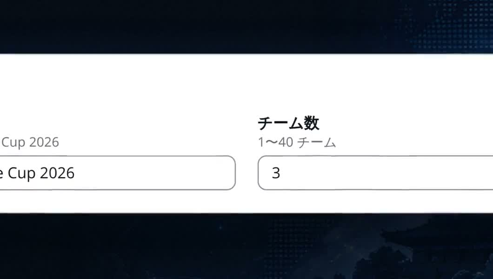

TenkaCloud / OSS の演習・競技プラットフォーム
クラウドとセキュリティを、実践で学ぶ。
自分たちの問題で、環境を動かして学ぶ OSS 基盤。演習の開催から回答・採点まで、ひとつにつながります。
ローカル環境で収録した操作画面
演習を開催し、回答・得点を管理。
主催者が問題とチームを用意し、参加者は環境を操作して回答。採点結果を確認しながら演習を進められます。
クラウドの操作を、
自分のPCで。
TenkaCloud Simulatorなら、対応するAPIやコンソールを実AWSへ接続せずに操作できます。作る、試す、結果を確かめる。失敗しても、もう一度。
Simulatorを見る →対応範囲・利用条件
画面はローカル収録の操作例です。Simulatorの映像は単体環境での操作で、参加者の操作権限は問題により異なります。対応APIは一部に限られ、環境・採点方式・費用も問題ごとに異なります。
Simulatorの対応範囲と起動方法オリジナル問題を
作れます。
問題文・ヒント・正解を用意し、チームで挑戦。回答・採点・ランキングを使って、競技形式で実践的に学べます。
対応する問題環境のデプロイと撤収も、主催者画面から実行できます。
問題の作り方を見る →自社のサービスを題材に
- インシデント訓練
- 自社サービスの構成に合わせて、調査や対応を練習。
- 新メンバーのオンボーディング
- サービスの構成や運用手順を、実際に操作して覚える。
- 企業ポリシーに沿った演習
- 社内ルールに沿った設定や判断を、問題を解きながら確認。
たとえば、情報漏えい。
ニュースで聞く情報漏えい、
どうやって起こるの？
情報漏えいも、クラウドの構築・運用も。さまざまな課題を、手を動かして学べます。
なぜ、実践なのか
クラウドの設定変更を、本番の前に練習する。
セキュリティは必要。でも何から始めればいい？ 経験者は少なく、頼るには費用もかかる。教科書で学んだことを、安全な演習の中で試し、結果から学び直せる場所が必要です。
情報漏えいの一例
他人のデータが見える。認可バグを試す。
ユーザーIDを変えて別人の架空データを表示し、所有者チェックで遮断する仕組みを試します。
情報漏えいの仕組みを画面で見る
CASE 001 / BROKEN ACCESS CONTROL
たった1つの ID が、境界を越える。
説明用のローカル演出 · 全データ架空 · 採点付き演習ではありません
GET /users/1042ログインできた。
それだけで安全？
自分のページを開くと、サーバーは ID 1042 の情報を返します。ログインの確認は「誰なのか」。でも「誰の情報を読んでよいか」は、別の確認です。
ID を1つ変えてみる ↓ID を変えただけで、
他人の情報が見えた。
1042 → 1043。所有者を確認しないサーバーは、別人の架空の個人情報まで返してしまいます。URL を隠すだけでは、この漏えいは止まりません。
漏えいしているのは、別の人の個人情報です。
止めるのは漏えい。
サービスは止めない。
サーバー側で、ログインしたユーザーとデータの所有者を照合。自分の情報は 200、他人の情報は 403。全員を遮断するだけでは正解ではありません。左右の ID を切り替えて、両方を確かめてください。
session.userId === record.ownerId
この画面は仕組みを説明するためのデモです。架空のデータを使い、採点は行いません。
デモ・ゲーム・開催方法を見る ↑参加者と主催者
構築・運用を学ぶ。自社で演習を開く。

参加する人
環境を操作して、構築・運用を練習。
構築や設定変更を試し、回答と採点結果を見比べて学べます。
参加方法を見る →
問題を作り、開催する人
オリジナル問題で、チームを育成。
自社のサービスや社内ルールを、問題文・ヒント・正解に反映。
独自の問題を作る → 開催ガイド運営機能・競技形式・活用例を詳しく見る
対戦か、演習か。両方か。
共有状態で競う Battle と、問題を解く Challenge。下は画面サンプルです。現行の対応問題は運営ガイドで確認してください。
Battle
Cryptography Battle はチーム共通の試合状態を使い、行動に応じて得点します。AWS 問題の採点方式と接続条件は運営ガイドで確認してください。
| 発生時刻 | 問題 | 種類 | 変動 |
|---|---|---|---|
| 数秒前 | microservice-migration-battle |
Battle (uptime) | -100 pt |
| 1 分前 | hello-world |
Challenge (flag) | +800 pt |
Challenge
問題を解き、指定された回答やチェックポイントを提出します。ローカルの Compose 問題もチーム競技に使えます。
microservice-migration-battle
Battle
難易度: 中級
挑戦中
hello-world
Challenge
難易度: 入門
未解答
hello-world-battle
Battle
難易度: 中級
挑戦中
クラウド実戦力を、組織で育てる。
クラウド人材育成 (= CCoE) / Platform / SRE / Security 部門が、 イベント基盤を自前で作らずに ハンズオン AWS 演習 を開催 / 運営できます。 環境払い出し / ログイン / 採点 / 進捗管理 まで、 ひとつの画面で完結。
研修イベントを、 年に複数回。
新卒オンボーディング / 内製化推進 / 部門横断の AWS 演習を、 同じプラットフォームで 年に複数回 開催できる。 単発ハンズオンから 計画的な 年間プログラム へ。
お問い合わせフォーム（要Googleログイン） ›演習設計を、 1 画面で。
イベント、チーム、問題、得点を共通の画面で管理します。ローカルと AWS 開催では実行環境が異なります。問題ごとの接続条件と検証状況は運営ガイドで確認できます。
運営ガイド ›実戦で、腕を上げる。
問題を解いて学ぶ OSS の競技基盤です。勉強会・学校・コミュニティでローカル開催でき、AWS 問題はクラウド開催で扱います。OSS ライセンスは無料ですが、クラウド資源の利用料は別です。
問題を作る ›セキュリティ研修を、ゲームにする。
遊ぶ → 気づく → また挑む
得点や結果を振り返り、次の演習で試す。ゲームとして何度も挑みたくなる体験で、知識の定着につなげることを目指します。
だまされる場面を、体験で学ぶ。
フィッシングやソーシャルエンジニアリングなど、自社で起きそうな場面を問題にして、チームで解きながら気づきを共有します。参加者はブラウザで参加でき、TenkaCloud のインストールは不要です。
簡単な問題から、実践へ。
問題文とヒントを読み、答えを提出する短いChallengeから。調査や環境操作を伴う課題まで、主催者が受講者に合わせて問題を選べます。
障害・インシデント対応を、訓練する。
障害対応や攻防の Battle 問題で、チームで状況を判断して手を動かす訓練ができます。スコアの推移から、どこで詰まったかを振り返れます。
PC 1 台から、社内で開催。
ローカル開催は SQLite で動き、AWS アカウントは不要です。LAN や Tailscale 越しに別の端末から参加できます。接続条件と Docker 問題の利用条件は起動ガイドで確認してください。
起動ガイド ›繰り返して、定着を確かめる。
同じ問題や類題を時期を空けて再び出題し、チームの得点や解答状況を前回と比べます。一回の受講で終わらせず、身についたかを確かめられます。
教材を作る・AI で始める・本で読む
足りない問題は、自分で作ればいい。
問題は TenkaCloudChallenge などの URL と ref を選んで取得し、大会は不変 snapshot を使います。独自問題の定義・実行環境・採点方法は作問ガイドで検証してください。Problem Pack の対応範囲も同ガイドで確認できます。
教材のアイデア例：怪しいメールや急かされた依頼を見て、確認方法や安全な対応を選ぶ。
Claude Code や Codex に下のプロンプトを貼り付けると、エージェントが TenkaCloud の説明から「遊ぶ / 立てる」の案内までやってくれます。中身は LLM 向けブリーフィング llms-full.txt です。
Fetch https://tenkacloud.com/llms-full.txt and read it — it is the canonical AI-agent briefing for TenkaCloud. If you cannot fetch URLs, ask me to paste its contents instead. Then, in my language: (1) explain what TenkaCloud is in about five sentences, (2) ask whether I want to PLAY (no AWS account needed) or HOST my own event on AWS, and (3) guide me step by step through the matching quick start from the briefing, stating costs and teardown before anything touches a real AWS account.
作り方を、一冊にまとめてあります。
ローカル Challenge、AWS Challenge、AWS Battle を簡単な順に一から作り、 複数チームで遊べる競技として動かすまでを扱う本です。 TenkaCloud を題材にしていますが、 読むのに AWS アカウントも TenkaCloud の導入も要りません。 日本語版と英語版があります。